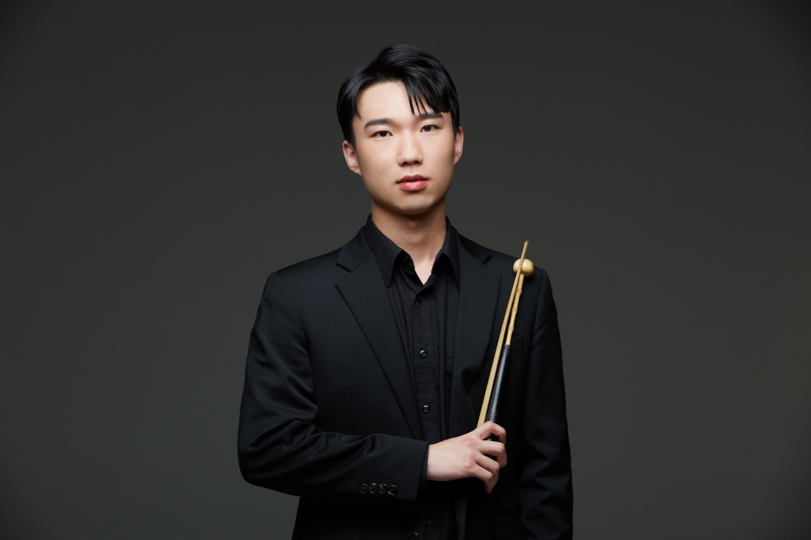
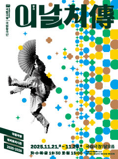
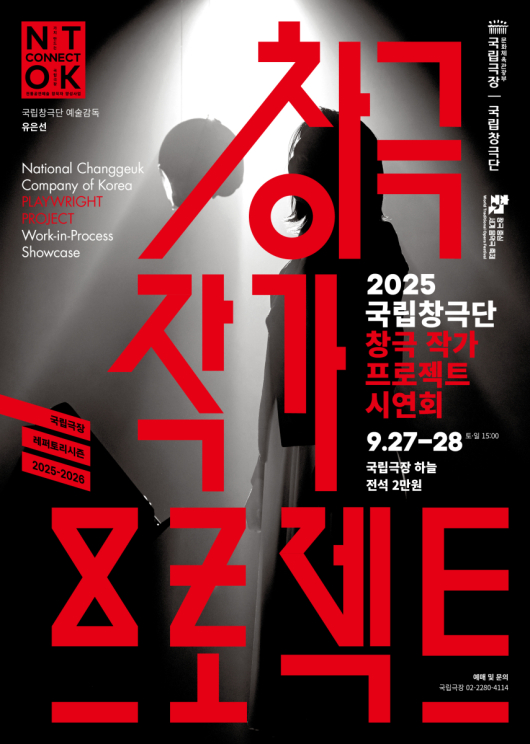
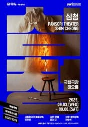
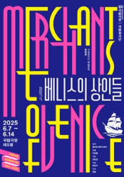
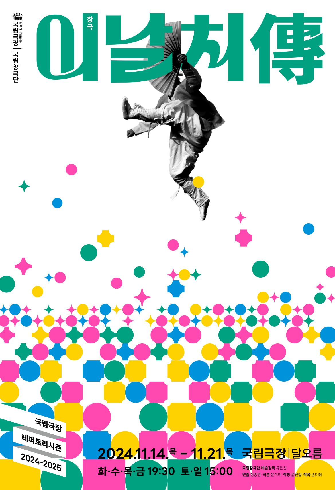
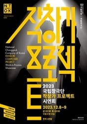
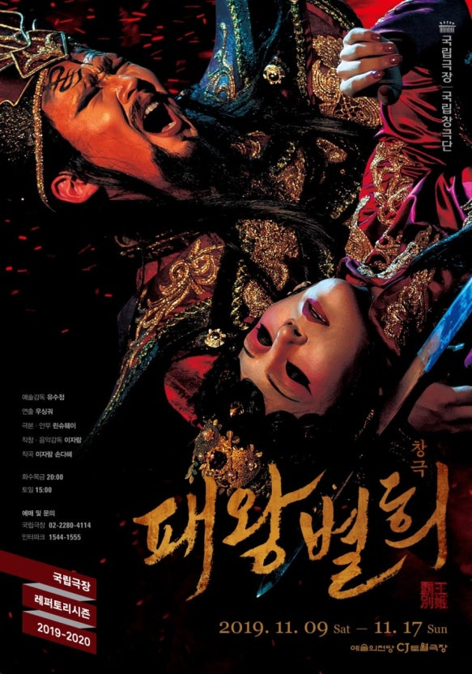
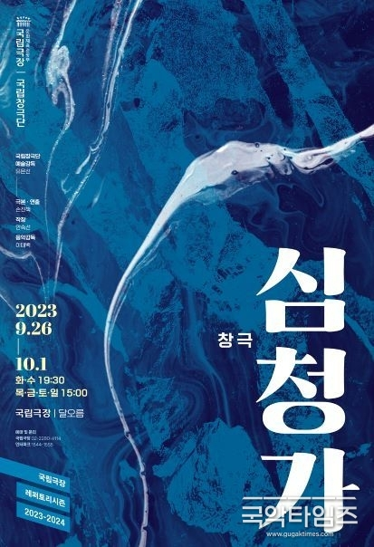
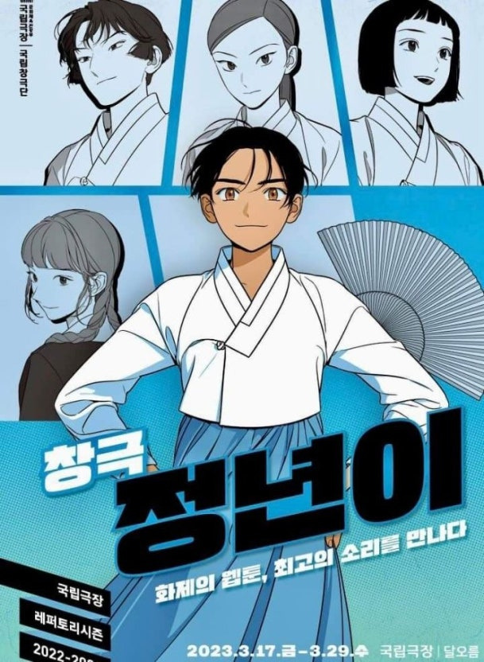

<!doctype html>
<html lang="ko">
<head>
<meta charset="utf-8" />
<meta name="viewport" content="width=device-width,initial-scale=1" />
<title>박 찬 희 — 포트폴리오 (v20A)</title>
<style>
  /* 기본 리셋 */
  :root {
    --bg:#0a0a0a;
    --muted:#dcd6c8;
    --gold: rgba(255, 215, 100, 1);
    --gold-weak: rgba(255,200,60,0.18);
  }
  *{box-sizing:border-box}
  html,body{height:100%}
  body{
    margin:0;
    background:var(--bg);
    color:var(--muted);
    font-family: "Pretendard", "Noto Sans KR", system-ui, -apple-system, "Segoe UI", Roboto, "Helvetica Neue", Arial;
    -webkit-font-smoothing:antialiased;
    -moz-osx-font-smoothing:grayscale;
    line-height:1.6;
  }

<section class="hero">
  <div class="container hero-inner">
    <div class="hero-left">
      <div class="hero-profile-wrap"></div>
    </div>
    <div class="hero-right">
      <h1 class="hero-title">박 찬 희</h1>
      <p class="role">프리랜서 / 국악 타악 연주자</p>
      <p class="desc">창극, 관현악, 전통음악 등 타악연주자로 활동하고 있는 박찬희입니다.</p>
      <a class="btn" href="#projects">프로젝트 보기</a>
    </div>
  </div>
</section>

<section id="about" class="section">
  <div class="container">
    <h2>About</h2>
    
    <div class="about-grid">
      <div class="about-box">
        <h3>학력</h3>
        <ul>
          <li>단국대학교 국악과 졸업</li>
          <li>동대학원 석사 졸업</li>
          <li>동대학원 박사 수료</li>
        </ul>
      </div>
      <div class="about-box">
        <h3>수상</h3>
        <ul>
          <li>제24회 공주박동진 판소리 명창·명고대회 명고부 대상(국무총리상)</li>
          <li>제25회 은평구 청강정철호국악제 명고부 대상</li>
          <li>제20회 전국국악대전 고법부문 대상</li>
          <li>제19회 여수진남국악경연대회 명인부 대상</li>
        </ul>
      </div>
    </div>
  </div>
</section>

<section id="projects" class="section">
  <div class="container">
    <h2>Projects</h2>
    
    <div class="projects-grid">

      <article class="project-card" data-title="국립창극단 <이날치傳> (2025 재공연)" data-duration="2025. 11. 06 - 2025. 11. 29" data-role="타악연주자" data-desc="타악연주자로 참여">
        <div class="project-img-wrap"> (2025 재공연)"/></div>
        <h3>국립창극단 <이날치傳> (2025 재공연)</h3>
        <p class="meta">2025. 11. 06 - 2025. 11. 29</p>
      </article>
    
      <article class="project-card" data-title="창극 <토선생, 용궁가다>" data-duration="2025. 10. 17 - 2025. 10. 18" data-role="타악연주자" data-desc="타악연주자로 참여">
        <div class="project-img-wrap">"/></div>
        <h3>창극 <토선생, 용궁가다></h3>
        <p class="meta">2025. 10. 17 - 2025. 10. 18</p>
      </article>
    
      <article class="project-card" data-title="국립창극단 <2025 창극 작가 프로젝트 시연회> '호녀'" data-duration="2025. 09. 27 - 2025. 09. 28" data-role="타악연주자" data-desc="타악연주자로 참여">
        <div class="project-img-wrap"> '호녀'"/></div>
        <h3>국립창극단 <2025 창극 작가 프로젝트 시연회> '호녀'</h3>
        <p class="meta">2025. 09. 27 - 2025. 09. 28</p>
      </article>
    
      <article class="project-card" data-title="국립창극단 <심청> (2025)" data-duration="2025. 08. 13 - 2025. 09. 06" data-role="타악연주자" data-desc="타악연주자로 참여">
        <div class="project-img-wrap"> (2025)"/></div>
        <h3>국립창극단 <심청> (2025)</h3>
        <p class="meta">2025. 08. 13 - 2025. 09. 06</p>
      </article>
    
      <article class="project-card" data-title="국립창극단 <베니스의 상인들> (2025)" data-duration="2025. 06. 07 - 2025. 06. 14" data-role="타악연주자" data-desc="타악연주자로 참여">
        <div class="project-img-wrap"> (2025)"/></div>
        <h3>국립창극단 <베니스의 상인들> (2025)</h3>
        <p class="meta">2025. 06. 07 - 2025. 06. 14</p>
      </article>
    
      <article class="project-card" data-title="국립창극단 <이날치傳> (2024)" data-duration="2024. 11. 14 - 2024. 11. 21" data-role="타악연주자" data-desc="타악연주자로 참여">
        <div class="project-img-wrap"> (2024)"/></div>
        <h3>국립창극단 <이날치傳> (2024)</h3>
        <p class="meta">2024. 11. 14 - 2024. 11. 21</p>
      </article>
    
      <article class="project-card" data-title="만신 : 페이퍼 샤먼 (2024)" data-duration="2024. 06. 26 - 2024. 06. 30" data-role="타악연주자" data-desc="타악연주자로 참여">
        <div class="project-img-wrap"></div>
        <h3>만신 : 페이퍼 샤먼 (2024)</h3>
        <p class="meta">2024. 06. 26 - 2024. 06. 30</p>
      </article>
    
      <article class="project-card" data-title="2023 국립극장 <송년판소리>" data-duration="2023. 12. 30 - 2023. 12. 30" data-role="타악연주자" data-desc="타악연주자로 참여">
        <div class="project-img-wrap">"/></div>
        <h3>2023 국립극장 <송년판소리></h3>
        <p class="meta">2023. 12. 30 - 2023. 12. 30</p>
      </article>
    
      <article class="project-card" data-title="국립창극단 작창가 프로젝트 시연회 (2023)" data-duration="2023. 12. 08 - 2023. 12. 09" data-role="타악연주자" data-desc="타악연주자로 참여">
        <div class="project-img-wrap"></div>
        <h3>국립창극단 작창가 프로젝트 시연회 (2023)</h3>
        <p class="meta">2023. 12. 08 - 2023. 12. 09</p>
      </article>
    
      <article class="project-card" data-title="국립창극단 <패왕별희> (2023)" data-duration="2023. 11. 11 - 2023. 11. 18" data-role="타악연주자" data-desc="타악연주자로 참여">
        <div class="project-img-wrap"> (2023)"/></div>
        <h3>국립창극단 <패왕별희> (2023)</h3>
        <p class="meta">2023. 11. 11 - 2023. 11. 18</p>
      </article>
    
      <article class="project-card" data-title="국립창극단 <심청가> (2023)" data-duration="2023. 09. 26 - 2023. 10. 01" data-role="타악연주자" data-desc="타악연주자로 참여">
        <div class="project-img-wrap"> (2023)"/></div>
        <h3>국립창극단 <심청가> (2023)</h3>
        <p class="meta">2023. 09. 26 - 2023. 10. 01</p>
      </article>
    
      <article class="project-card" data-title="국립창극단 <베니스의 상인들> (2023)" data-duration="2023. 06. 08 - 2023. 06. 11" data-role="타악연주자" data-desc="타악연주자로 참여">
        <div class="project-img-wrap"> (2023)"/></div>
        <h3>국립창극단 <베니스의 상인들> (2023)</h3>
        <p class="meta">2023. 06. 08 - 2023. 06. 11</p>
      </article>
    
      <article class="project-card" data-title="국립창극단 <정년이> (2023)" data-duration="2023. 03. 17 - 2023. 03. 29" data-role="타악연주자" data-desc="타악연주자로 참여">
        <div class="project-img-wrap"> (2023)"/></div>
        <h3>국립창극단 <정년이> (2023)</h3>
        <p class="meta">2023. 03. 17 - 2023. 03. 29</p>
      </article>
    
    </div>
  </div>
</section>

<section id="contact" class="section">
  <div class="container">
    <h2>Contact</h2>
    
    <p>공연 및 협업 문의: <a href="mailto:ql1497@naver.com" class="email">ql1497@naver.com</a></p>
  </div>
</section>

<div id="modal" class="modal" aria-hidden="true">
  <div class="modal-content" role="dialog" aria-modal="true">
    <button class="modal-close" aria-label="닫기">✕</button>
    <h3 id="modal-title"></h3>
    <p id="modal-duration" class="meta"></p>
    <p id="modal-role" class="meta"></p>
    <p id="modal-desc"></p>
  </div>
</div>

<script src="script.js"></script>
</body>
</html>
